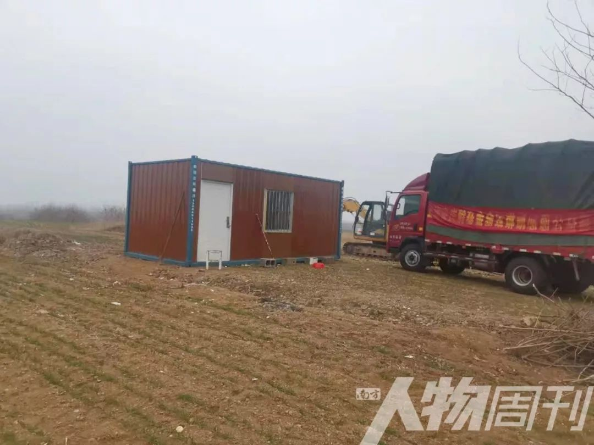
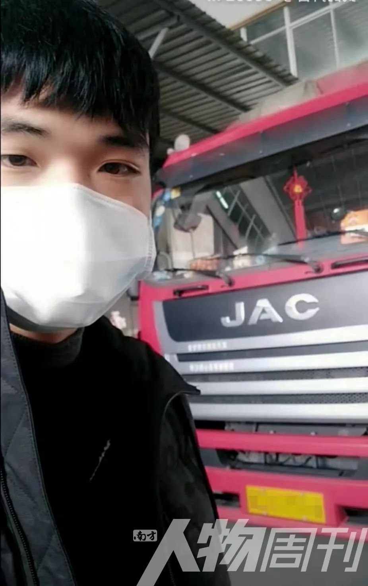

95后司机携妻为武汉送消毒水：“她担心我，死活不愿下车” | 棱镜
原文链接 备份链接 作者 | 江晓川 出品 | 棱镜·腾讯小满工作室 欢迎下载腾讯新闻APP，阅读更多优质资讯 “我不想让老婆跟我一起去武汉，但她死活不愿意下车。” 回想起几天前的经历，家住江苏无锡的90后货车司机顾师傅既有对妻子的愧意， …


*************▲ *************一位货车司机在高速收费站接受体温测量
全文共7042字，阅读大约需要16分钟。
本文转载自南方人物周刊
文 | 黄剑
编辑 | 周建平
新年钟声敲响时，李星正在高速公路上，驾驶卡车赶往湖北省孝感市。一路上难见车影，偶尔遇见的，是和他一样的大货车。
车窗外一路漆黑，只有路过一些村庄、市镇时才有些许光亮。往年此时绚烂的烟花，在这个寒冷的冬夜里，只是零星地绽放，让独行在公路上的李星，终于感受到一点过年的气氛。
收音机里播着春节联欢晚会。李星听不出所以然，开始听抖音里的小视频：一些人欢歌笑语，与家人共度除夕；一些人痛哭失声，为家人的病痛而悲伤。
他点开家人发来的微信语音，妻子和孩子们祝福他，“新年快乐，一路平安，注意保护自己。”
李星是一名货车司机，原本打算与家人一起过年，大年初三初四左右重新上路，继续自己的公路生涯。突然严重的疫情，改变了他与亲人共度除夕的计划。
在这个春节期间，被疫情改变假期计划的货车司机还有不少。
1
“最难的时候，政府给了我们帮助，给钱治病，资助孩子上学。1991年，淮南闹洪水，灾后当地政府帮助重建了房子。现在国家有难，我们也要回报。”
2020年1月21日，李星运送最后一车货前往山东临沂，车上坐着他的儿子。孩子平时很难见到他，放假后吵着要跟父亲出车。
这趟货卸完，他可以在家待上足足一周，好好与妻子、孩子一块过年。他家在临沂市临沭县石门镇大官庄村。过去很多年里，他都与家人聚少离多，有时除夕也在外面。
李星在家里待了两天，村子里越来越热闹，红纸、灯笼、烟花、喧闹声、鞭炮声……装点着这座北方村庄。到了1月24日大年三十，这份热闹却像突然染了病，渐渐变得有气无力。
1月23日晚，李星的手机里突然充斥着关于武汉的新闻。微信、抖音、今日头条……几乎所有的网络平台上，人们都在谈论武汉疫情。
23日凌晨两点，武汉市新型冠状病毒感染的肺炎疫情防控指挥部宣布：今日10时起，武汉公交、地铁、轮渡、长途客运暂停运营；机场、火车站离汉通道暂时关闭。
武汉交通封城，李星才察觉到湖北疫情很严重。他从手机里得知湖北急缺医疗物资，有些担忧，坐不住。次日大年三十早晨起床，他一直在货运平台运满满上刷订单，看有没有从临沂市周边运往湖北的货。到了中午，他看到一条订单，需要运一批医疗物资前往湖北孝感市，立即接了单。
他告诉妻子，自己不在家过除夕了，要运货去湖北疫区。妻子不同意，希望他能够在家好好过年，哪都不要去，更不要说前往疫区，怕他感染病毒。
李星坚持要走。“疫情那么严重，你说咱没有钱，可以在精神上支援，出一份自己的力。到那边要是被传染上，就做特别隔离，一切后果我也考虑过，我自愿。”
他硬着头皮，和一名同村好友开车离开了村子，心里有一些歉疚，“也挺难受的，没陪陪家里人，在家里过个年。”
这一天，在路上的还有货车司机曹师傅。已经年过50的曹师傅，正拉着一车医疗物资，从温州前往武汉。往年这个时候，他也常常在外跑车。儿女都不在家，老家的房子早卖掉了，对他来说，在家和在路上，没有区别。
他的儿子是军人，正在武汉，劝他不要前往疫区。但他坚决要去。他年轻时做生意赚了点钱，沾上赌博，欠了不少债，和妻子也离了婚，自己带着两个孩子，日子困难。“最难的时候，政府给了我们帮助，给钱治病，资助孩子上学。1991年，淮南闹洪水，灾后当地政府帮助重建了房子。现在国家有难，我们也要回报。”
他从1月22日便开始往武汉跑，当天，他运送一批医疗设备到了武汉。随后几天，他一直往返于湖北与江浙地区之间，运送医疗物资到武汉，连续六趟，不曾停歇。
几天以后，安徽铜陵司机王辉也出发了。1月27日，他在家里过年，接到公司的电话，说有一批物资需要从安徽滁州运往武汉，愿意去的话，公司给予一定的奖励或者补贴。
“现在气氛比较紧张。我老家这边，亲朋好友也都不互相串门拜年。但我觉得我应该去武汉，并不是冲着奖励，钱没有安全重要。”王辉在27日连夜开车去了滁州。

李星
2
网络世界里的武汉，像是处在另外一个世界，令他不忍卒听。
大年三十午后，李星吃过饭，辞别家人，驾车前往临沂的发货地点。要运送的是一批防护面罩、防护靴和口罩，由一家公司捐赠，接受单位分别是北京和湖北孝感的医院。
李星戴着口罩，用酒精给自己的货车消毒，然后才让捐赠公司装货。装完已是下午5点。捐赠方提醒他，这批物资特别紧急，必须在当天夜里送达。李星吃过快餐，登上驾驶室，发车，开往疫区。
几个小时后，他在郑州下了高速，找到在路口等他的一辆货车。这是北京接收方派来的车，把李星运来的防护面罩和防护靴送往北京。李星转交完货物之后，继续上路，载着口罩前往湖北孝感。
高速公路上空荡荡的，偶尔有灯光闪过，也都是对向车道北上的汽车。他一路畅通，高速行驶，不用担心如往日那般车道拥堵。
晚上8点过后，收音机开始播放春节联欢晚会，终于有点过年的感觉。他听了一段时间，开始听同村好友播放的视频。这些视频大多是武汉网友上传的，他越听，情绪越激动。网络世界里的武汉，像是处在另外一个世界，令他不忍卒听。
同伴陪他聊了一会儿天，渐渐睡着了。路上一片寂静，除了货车的轰鸣声。公路两侧的反光告示牌在夜色中无声地掠过。
“路上看不到车，没有参照、刺激，很容易放松警惕，等你发现前面有辆车，刹车都可能来不及。”李星一路没有休息，在连续开了九个多小时、穿越八百二十多公里后，于1月25日大年初一凌晨2点20分，从孝感杨店镇下高速。
交完四百多元过路费，从收费站出来，便有交警和医务人员过来，给他测量体温，一切正常。前方的道路已设置关卡，不能再往前走了。
五分钟后，接收医院派来的义工赶到。“我戴着口罩在车里，除了签字、打开车厢门给他们卸货，没怎么跟他们近距离接触。”李星说自己一直很小心。
王辉比李星晚出发几天。1月28日，在滁州金禾实业公司装上消毒液，他便开车前往武汉。凌晨过后，一片片雪花开始扑到挡风玻璃，视线越来越差，天也越来越冷。他不得不放慢了速度。静穆的山间，只有他的车在动。
在风雪中行驶了数百公里后，29日凌晨5点多，他到了武汉新洲区。刚到收费站，便被交警拦住，查验体温和证件。之后，守候在收费站附近的物资接收方开始过来跟他交接货物。
和其他司机一样，交接完支援物资后，王辉在收费站掉头，空车开往南京，准备运送下一批去往武汉的物资。在路上，他接到老家一位公务人员打来的电话。“他自称是铜陵市的一个什么书记，已经了解到我去了武汉，问我去干嘛，身体情况怎么样。”
3
“过年期间，我一直在路上，每天睡车上，吃泡面。”
1月25日早晨8点，卸完货之后，李星在孝感收费站直接掉头，开回了临沭老家。他想带点货回去，赚点路费贴补一下，但下不了高速，进不了城，有货单也没法接，何况几乎找不到从疫区发出的订单，只能开空车回去。
往年的春节前后，他常常也会在路上。因为很多司机回家过年，运货的人少了，运费会比平时高一些。“年底一公里可以涨到两块六左右，到了春节期间，能涨到三四块，这样我就可以赚一些。”李星介绍，到了夏天，运费就特别低，平均每公里只有两元左右。
“一公里烧油要一块钱，再加上过路费，几乎没有什么赚头。如果是再小一点的货车，那就是白忙活了。从信息到物流，里面吃的、扣的太多，他们还要赚一些。”李星抱怨道。
34岁的李星已经在路上开了十年货车，如今已经是三个孩子的父亲，父母也年过花甲，整个家庭都靠他开车维持。他从学校出来便进了工厂打工，但收入微薄，后来又去海南修了两年码头，几乎都是“月光”。他觉得没出路，回老家考了驾照，开始帮别人开货车。
2019年春节刚过，他贷款买了一辆二手货车，自己成了车主。他没钱，从银行贷了两笔钱，总共11万元。“一笔每个月还两千多，另一笔先还利息，每个月五百多。”李星称自己每天要挣四五百元，才能偿还贷款，养活家人。
对李星来说，春节前后是他一年中最赚钱的时候。但是今年春节，他没法赚钱了。尽管运送医疗物资前往疫区，高速公路免费，但是回程没有货运，他能赚的不多。
不过，在疫情暴发的这个特殊时期，李星愿意接受这样的状况。“我空车开回来，来回差不多两千公里，加上过路费和油费，没怎么赚钱，就当是尽一份力了。”
李星空车回去，收费站也没给他免过路费，回到临沭家里，已经是晚上。他在家休息了一天。1月26日下午，他又接了一趟运送消毒液至孝感的活儿，匆匆开到江苏省阜宁县上货，之后连夜赶往湖北。
李星在风雪中开了九个小时，直到1月27日凌晨两点半，在孝感杨店镇高速公路收费站，把消毒液交给前来提货的接收方，之后又一次空车掉头开往老家临沭。
前往疫区时，他连夜冒雪开车，一路没有停歇，回程时已疲惫不堪，扛不住了，在信阳高速服务区停车，饱饱睡了一顿，才再次往老家开去。
1月28日傍晚，他沿着京沪高速行驶到临沂地界，准备在郯城红花埠收费站下高速，但这座收费站已经站满了交警和医务人员。工作人员给他测了体温，登记了他的证件和出车信息，知道他从湖北过来，让他掉头。
“我体温36度多，但郯城交警不让我下，我只能重新上高速，到了下一个收费站，交警又不让我下，最后我到了临沂的罗庄收费站，才下了高速。”李星介绍。他没想到仅仅离开家不到两天，形势又发生了变化。
从武汉空车开往南京的时候，王辉也被交警拦住了。第一次是从安徽进入江苏境内时，交警让他配合医务人员测量体温。第二次是在南京下高速公路，他被拦下测体温，登记信息。
“我体温36度5，但是只要是从武汉过来的，他们就不让下高速，不管体温是否正常。我就跟他们说，我不是从武汉来的。虽然是我做了好事，但不能留名。”王辉介绍他的经历。
从南京下了高速之后，他在分公司稍作休整，当天便开车前往浙江，装载一批支援火神山医院的桌椅。装货的时候，有装货工想到他的驾驶室拍段小视频，发在抖音上。一些人便过来阻止，不让装货工靠近驾驶室，说这辆车是从武汉过来的。王辉看到这些，“心里有点微妙的感觉，但没有说啥。”
曹师傅在南京的时候，也有过类似的感觉。1月25日，他从南京运送250箱口罩去武汉。装货的时候，有工人说他从武汉过来，让别人别靠近他。他觉得对方说话的方式太难听，跟他们吵了起来。幸好旁人劝住，事态没有升级。到了武汉交接货物时，他发现少了一箱口罩，打电话去发货公司，才发现吵架的工人故意藏了这箱口罩。
自疫情暴发，他一直在武汉与各地之间奔波。送完货后，晚上想去宾馆睡觉，但都被拒绝，只能回到车上睡。有时候，下车问人要一壶热水泡面，也会被拒绝。曹师傅觉得不是滋味。
不过，也会遇到热心的人。前些天，他在浙江的一家修理铺补胎，老板得知他运货去武汉，请他在家里吃饭。“过年期间，我一直在路上，每天睡车上，吃泡面。”曹师傅十来天第一次吃上热乎正经的饭菜。
4
村长打来电话说，已经知道他去过湖北、刚下高速，让他不要回村里。
1月28日晚上8点，天已经黑，李星下了高速，沿着沂河路往老家曹庄镇开去时，村长打来电话说，已经知道他去过湖北、刚下高速，让他不要回村里。
他听到电话，有点懵。“我什么事都没有，只是去湖北运货，都没有下高速，怎么就回不了家。”他有些难以接受，但村长跟他说，这是政策，去过疫区，回来要自我隔离14天，或者待在家里，全家人一起隔离，或者去村里临时设置的隔离点。
“如果真感染了，在家隔离那不是害了家里人？”他选择去了村里的临时隔离点。晚上9点多，他到达位于沭河边的隔离点，这里离他的村庄四五里地。他眼前只有一间活动板房，搭建在河边上。房子里有一张床和桌子，妻子已经提前给他准备好被褥。

李星住的简易隔离房
屋外的北风呼呼响着，屋内冷如冰窖。他有些生气，村里没有给他找个暖和点的地方。“我本来没事，要是冻发烧了，回头他们来测体温怎么办？”他打电话向发货方抱怨，自己是为了支援疫区人民，运物资去湖北，最后却回不了家，只能在这样一个条件恶劣的地方待两周。
他不满隔离区的条件，也担忧自己未来两周都要窝在这个小屋里，干不了活。“我要养三个孩子，还要还车贷，每天开支至少300块，到5月份的时候还要还五万的贷款本金。”李星着急、忧虑，给运满满工作人员发了数条信息。
当晚，运满满答应，隔离期间每天给他补贴200元。不过，他依然不能平复心情，尤其是知道与他同样去了湖北的货车司机顾耀东，最后在条件更好的宾馆隔离。他把货车里的被子拿到小屋，把自己裹得严严实实。第二天早上，他发现自己没被冻感冒，才开始接受现状。
在同一天晚上，顾耀东遭遇了与李星类似的境况。1月28日下午，顾耀东和妻子唐紫月送完消毒液，从武汉返回，准备在常州下高速。他们家位于无锡西部，离常州高速出口较近。一天前，顾耀东看了网上关于武汉的视频，要去送货。唐紫月担心，要和他一起承担风险。
顾耀东夫妻进入常州邹区收费站，被交警要求下车测量体温，登记信息。二人体温正常，也没有症状。登记完之后，交警得知他们是从武汉过来的，便要求他们前往当地政府指定的隔离点，或者回到高速公路，前往下一个收费站。
“交警说，我们的信息已经上传，走到哪儿都会被追踪。”顾耀东希望去无锡试试，调转车头，重新上了高速。到了无锡收费站，下高速的车已经排成了长龙，交警和医务人员在收费关卡给排队者登记信息、测体温。
顾耀东有点担心回不了家，把车停在长龙里，排着队。工作人员给他发送了一份《疫情防控告知书》，由无锡疫情防控应急指挥部下达，上面写道：
“从1月26日起，凡来锡人员在两周内有湖北地区旅行史……必须主动报告现场查验人员，服从配合现场查验人员进行体温检测。未发热的，一律由现场工作组统一安置到集中医学观察所或居住地进行14天医学观察；发热的，一律由120专车转送至指定医疗机构发热门诊留验筛查。”
快一个小时过去，轮到顾耀东夫妇，登记完信息，体温正常，交警让他们去观察所隔离14天。顾耀东解释：“我们是运送医疗物资去武汉的司机，就在高速路口卸货，没进城，回来还要去支援疫区。”他希望交警让他继续运货，希望自己不要被隔离。交警告诉他，他们已经“向上面反映情况”，让他在车上等着。
在他前面，已有几名去过武汉的货车司机被隔离了。十几分钟后，一名交警过来问他，能否回老家去。“老家我回不去啊，村里都封村了。”顾耀东解释，自己住在无锡。交警说，会继续反映他的问题。
顾耀东给父亲打电话，让他帮忙照顾家里一岁的女儿。夫妻二人在车上睡了一夜。在过去很多个夜晚，无数条路边，顾耀东都是这样睡在自己的车里。第二天早晨，交警过来告诉他，进无锡，必须要隔离。随后，交警把二人带到他们家附近的一家酒店隔离观察。
比起李星居住的隔离板房，顾耀东夫妻在无锡的待遇要好不少。这里有热水、空调供应，餐点到了，会有人送来饭菜。“我问过饭钱的事，政府说先吃着，不用担心。”他向南方人物周刊介绍，这座隔离宾馆如今已经满员。
运货平台让顾耀东不要担忧，每天会给他200元补贴。他慢慢接受了如今的状态。每天上午和下午，医务人员都会来给他俩测体温，但他们哪儿都不能去，只能在酒店里玩玩手机、看看短视频、跟孩子视频聊天，打发时间。

顾耀东
1月31日，货车司机刘成成也被隔离观察了。不过，与李星和顾耀东不同，他在自己家里。在此前一天，他和同事李杰从江苏金湖送了一车消毒液前往武汉。把李杰送回安徽老家后，他一个人开车回家。他是淮安市淮阴区古寨村人，90后，开货车已有两年。
他在淮安东高速公路收费站测了体温，登记了行车信息，回到家后，村干部和警察、医生就出现了，带他去镇卫生院拍CT、血检。结果显示一切正常。
回家后，医生背着消毒液喷洒器，把他家里的每个角落都喷了一遍。警察给他拍了照片，让他不要出门，在家隔离观察14天。与他一起隔离的，包括家里的所有人。
每天上午和下午，警察和医生都会过来一次，给他和家人测体温，有时候还带一些生活必需品、食物。刘成成每天戴着口罩，窝在床上翻手机，到了饭点，母亲会把饭菜端进来，除了上卫生间，从不出屋门。
这样的状态，他并不排斥，“本身国家也有规定待在家里。”唯一让他有点难受的是，屋子里到处是刺鼻的消毒液气味。

李杰和刘成成的货车抵达武汉泾河收费站交接货物
5
他说，不知道还可以运多少回，只要还能运，他都会在路上。
2月11日，王辉又开车去了安徽芜湖装载一批家电，他需要在第二天早晨到达武汉。自从1月27日离开家以后，他已经在路上跑了半个月，运了五批物资前往武汉。但2月3日左右开始，他运送货物越来越难了。
随着疫情的发展，江苏、浙江等地已经开始限制去过武汉的货车下高速公路。“现在很多地方要求有当地的户口或者房产证才让下高速，我是安徽的车，只能在安徽下。”王辉称，他和公司的几名司机，像是在打游击。这次从武汉回来之后，进入安徽境内，他在老家铜陵附近下了高速，换国道开往芜湖装货，“如果从武汉回来直接去武汉，下不了高速。”
在目前的形势下，像王辉、李星等人这样，自愿前往湖北等疫区的货车司机，并不是多数。“很多人会有顾虑，也能理解，毕竟去湖北，有感染的风险。”王辉称。
尽管运输日益困难，王辉的老板管江南还是鼓励部下，尽量往武汉运物资。“我们出了一套激励方案，这段时间去疫区的司机，五百公里以内，一趟补贴五千元，超过五百公里的，每公里补十元，还有表彰信。”
管江南是安徽华燕物流有限公司的负责人。他介绍，当前疫区缺医疗物资，也缺蔬菜、粮油等生活物资，除了湖北，温州等地也遇到了类似的困境。“愿意去的司机也不多。有的司机愿意去，但在农村老家出不来。现在我们又有两个驾驶员不愿意去了，他们之前想去，现在有些害怕。”
受到隔离观察的影响，以及一些地方对外地车的限制，管江南感觉货车司机越来越不够用。他的公司平时合作的货车有六百多辆，春节期间，他们统计，只有八十多辆车出门，愿意去武汉的，则是15辆。
“现在我们的驾驶员把蔬菜运送到一些城区，有的当地老百姓不让我们外地车进去。”管江南认为目前物流环境困难，需要一段时间的缓冲期。
2月11日晚，王辉在芜湖装完货后，驾驶他的货车，重新踏上了前往武汉的路程。他说，不知道还可以运多少回，只要还能运，他都会在路上。
（实习记者聂阳欣、梅寒、杜莉华、熊方萍对本文亦有贡献）
戳击下面图片 继续阅读专题


原文链接 备份链接 作者 | 江晓川 出品 | 棱镜·腾讯小满工作室 欢迎下载腾讯新闻APP，阅读更多优质资讯 “我不想让老婆跟我一起去武汉，但她死活不愿意下车。” 回想起几天前的经历，家住江苏无锡的90后货车司机顾师傅既有对妻子的愧意， …
原文链接 备份链接 “我们这部分很模棱两可，不上不下的人，没有人管” “问题核心是对病毒的恐惧，变成了对湖北人的恐惧” 本文首发于南方人物周刊 文 | 本刊记者 张明萌 实习记者 梁翰文 编辑 | 蒯乐昊 全文约3645字，细读大约需 …
原文链接 备份链接 物资抵达武汉只是第一步，如何将这些物资及时、有效、尽量低损耗地分发给有需要的人，更是难题 文 |《财经》记者 刘以秦 编辑 | 谢丽容 2月16日上午10点，12辆货车抵达武汉武东收费站，他们连夜从江西赣州赶来，载 …
原文链接 备份链接 目前武汉的摸底方案是继续以小区为单位进行人群隔离，如有体况异常者则拉送方舱，直至无新增疑似为止，这个过程究竟还要多久，尚无答案。 答案缺失的原因有二，一是无症状潜伏期的判断一再浮动，最新的病例已有24天潜伏发作，这让隔 …
原文链接 备份链接 【财新网】（记者 丁捷 综合）距离新冠肺炎的出现迄今已经超两月。病毒从何而来尚未明晰。2月16日，中科院武汉病毒研究所发布声明，辟谣“零号病人”。此外，全国前两例感染患者遗体解剖完成，这两具由解剖获得的新冠肺炎病理目 …